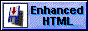
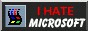
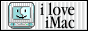

About me:
- I love Y2K, Frutiger Aero, MetroUI and CLI <3
- I code in C, C++, Python and a bit C#
- I despise Windows and Visual Studio (might be skill issue)
- I <3 METAL AND ROCK :-D (Wish I had a bass guitar)
- Fuck streaming, embrace local files.
- There is no better system than UNIX and it's clones.
- GNOME > KDE
- Fav bands: Nirvana, Metallica, Dezerter, System of a down
- Fav games: Hitman WoA, Hitman: Absolution, Bully, Forza Horizon 2
My projects:
- Pong - SDL1.2 (Porting project) - porting pong made in SDL1.2(/2) to as many platforms as possible
- Pong game - rewriting pong in many languages for fun
- tinycube-py - simple minecraft classic clone in Python with Ursina Engine
- XBCentral - a fullscreen GUI app to manage Xbox 360 exploits and convert .iso games to Games-On-Demand format



